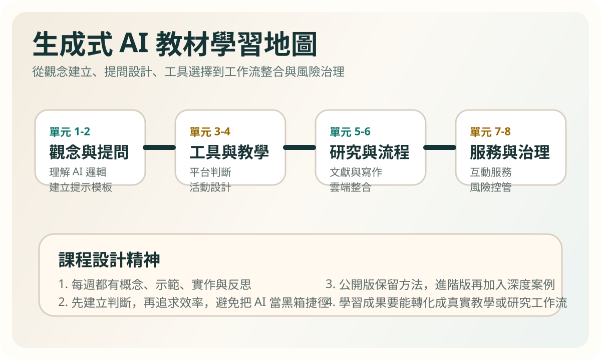
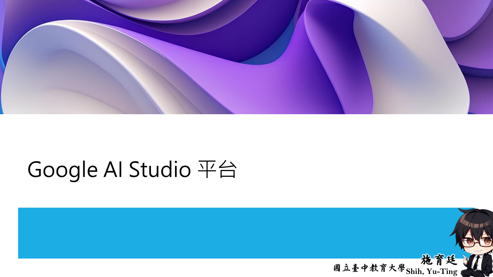

Learning goals
- Distinguish AI, machine learning, deep learning, and generative AI.
- Recognize the difference between analytical AI and generative AI.
- Identify both the promise and the risk of AI-supported work.
Key ideas
Generative AI changes work not only by speeding tasks up, but by shifting people into a mode of describing, refining, and judging outputs through dialogue. Users are no longer just clicking functions. They are defining tasks, setting conditions, and evaluating results.
That means learning AI begins with judgment. Which tasks are suitable for AI drafting? Which require human review? Which should never be delegated to AI in the first place?

Visual cases

This cover helps learners see AI as a concrete platform and workflow entry point rather than only a buzzword.

The interface screenshot links core concepts to an actual environment where prompting and evaluation happen.
Activities
Activity 1: Same question, different systems
Ask the same question to a search engine and to a generative AI tool. Compare structure, usefulness, tone, and risk.
Activity 2: Role framing
Discuss whether AI behaves more like an assistant, editor, advisor, or co-author and explain why.
Task
Write a short reflection on which part of your learning or work is most likely to change because of AI, and name one situation you want to test further.
Further viewing
Use the YouTube channel's video archive, stream archive, or playlists to strengthen this unit's core ideas about AI as a thinking amplifier rather than a simple answer machine.